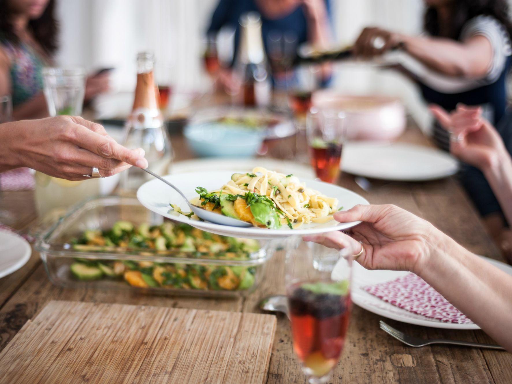
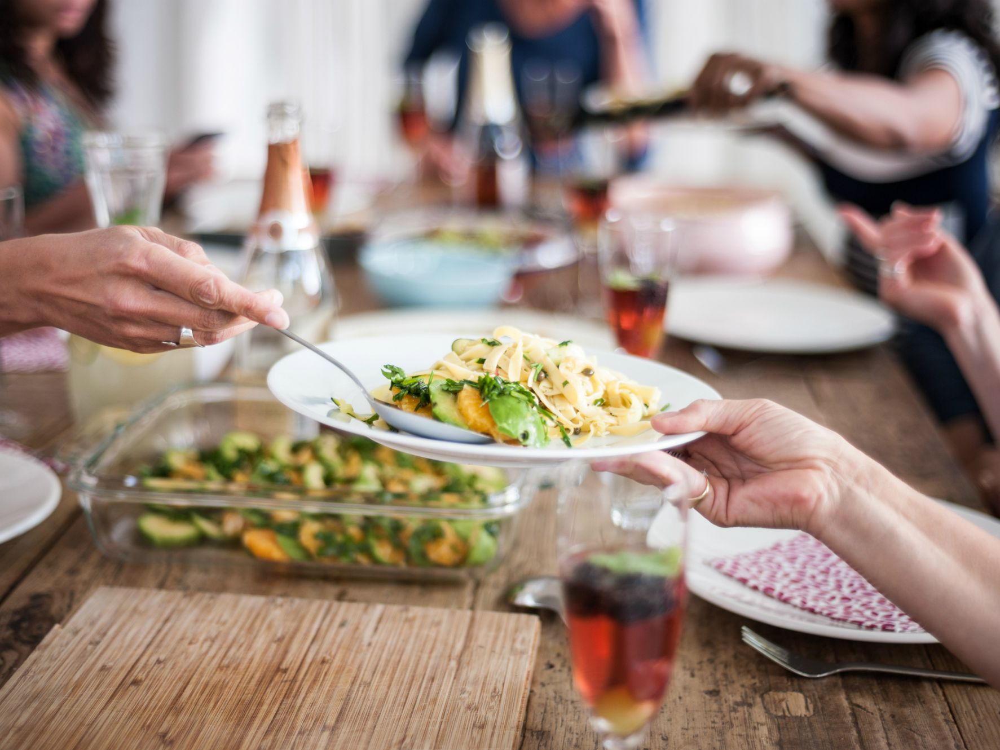
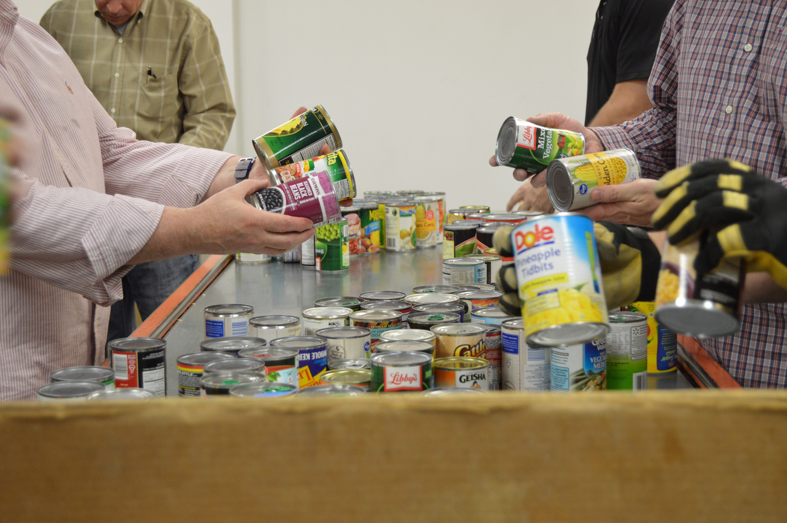
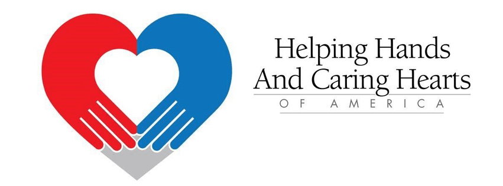
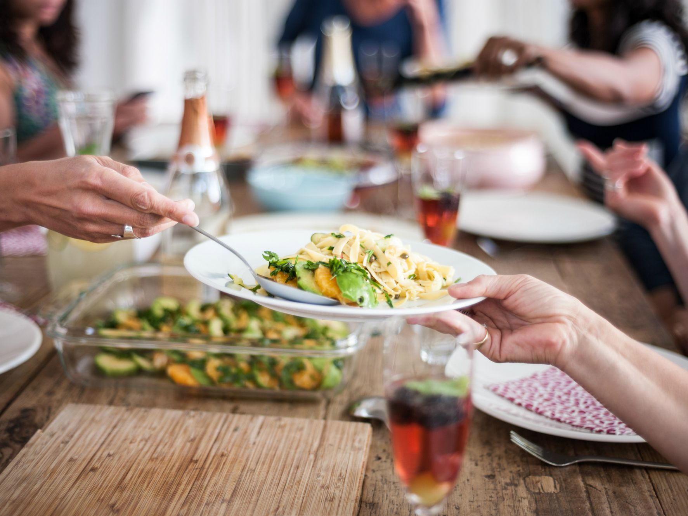
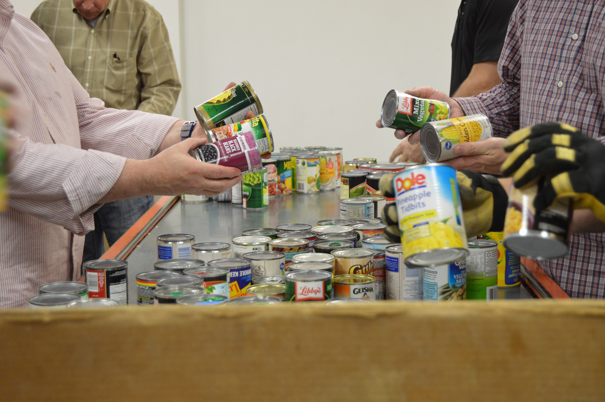
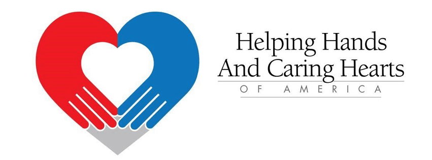
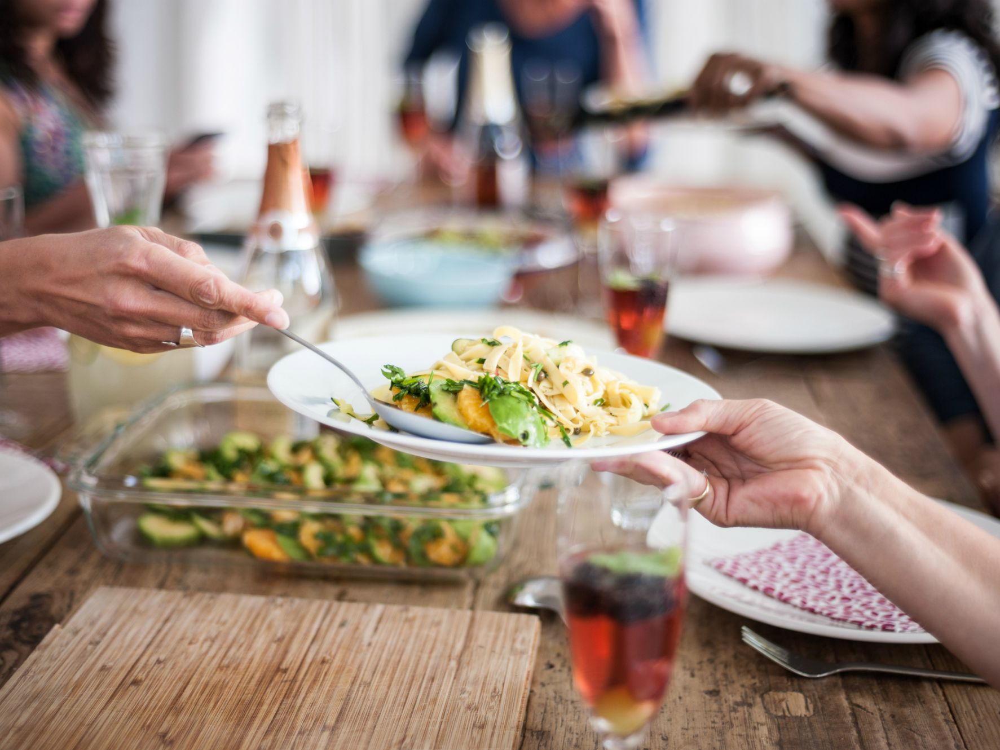

Portfolio
 



 
Hi, I am currently a student at UCR and I am part of the class 2025
I am currently majoring in Business and specializing in marketing.
Hello, I am currently a student at UCR and will be majoring in Business (Marketing). I am very passionate about social media marketing, programming, video editing, traveling, art, and entrepreneurship. As I graduate, I plan to pursue a career in marketing and international business. I enjoy traveling and visiting new places to expand my cultural knowledge. I love to try and eat new foods while experiencing new things in the world. I love to monitor and analyze different changes in social media and market new products through social media to different audiences. I also enjoy computer programming and creating new programs that revolve around games, programs, and websites. I also enjoy video editing because it allows me to express my creativity and propose new types of marketing strategies to other people. Video editing has allowed me to dwell on multiple types of digital creation that help people visualize and experience different types of emotions when engaging with my content. Traveling has also been a prominent interest for me as I love to experience new things. I enjoy visiting new countries and regions to experience the world. A quote that I live by is that “live life to the fullest” and I always continue to strive for that. No matter the situation, I believe that life can only last so long so I try to spend my time experiencing as much as I can. Art is also a big passion of mine as I grew up creating different types of art. I love to paint, draw, animate, and create music. Art is an avenue of mine that allows me to express my creativity and emotions to the world. I enjoy art as it creates a sense of comfort and relaxation for me as I can leave my mind drifting in ideas and thoughts about different ideas. As I grow older, I plan to create a company that dwells around fashion, art, music, and food. I plan to create this company to help people experience an avenue of new ideas, experiences, and sensations that are founded across the world. The company’s mission is to help people experience new things while combining different cultures into one experience. I believe that the world should be experienced fully in order to find true happiness. People should try new things, go out, and leave their comfort zone to understand different perspectives and fully understand how the world works. Life is too short to dwell on the small things, live, love, and appreciate how diverse the world is. Diversity has also been a prominent idea that I live by because diversity allows people to experience a variety of perspectives and understand differences in people. As a result, I will constantly try to leave my comfort zone, experience new things, and try to spread joy to others during my journey. As I grow older, I plan to visit different parts of the world and try to spread joy and diversity by introducing people to different perspectives and knowledge.
• Deliver all products with friendly individualized attention towards each guest.
• Contributes to a memorable guest experience by providing prompt service, quality food, beverages, and products, and maintaining a clean, safe, and comfortable environment.
• Responsible for educating our guests and demonstrating personal accountability and commitment to team success.
• Helped package, serve, and donate food and essential living supplies to the community of Pomona.
• Promoted positive environment through charity
